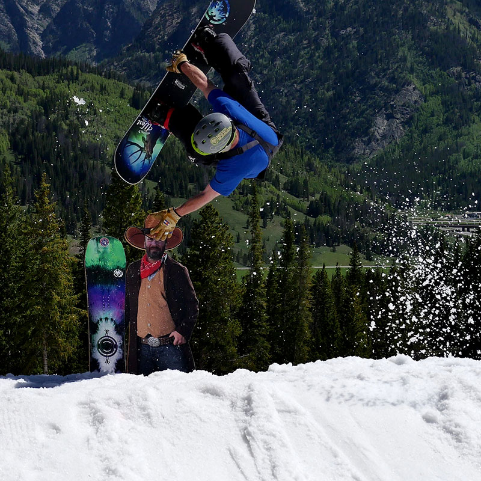

<div id="content">
  <div id="main">
    <div class="container">
      <div class="one_third">
        
      </div>

     <div class="two_third last">
						<h1>Ian Smith</h1>
						<p><span style="font-family: Helvetica;"><b>MEET IAN...</b></span><span>&nbsp;I grew up in Evergreen Colorado. I have been snowboarding at all the summit county mountains my whole life. I love to travel, experience new things, and snowboard new territories, however, I always find my way back to my home mountains. My older brothers have been my greatest influence with snowboarding. They persuaded my parents to buy us all snowboards and switch from skiing when I was 9 years old, and I haven't looked back since. Snowboarding is my ultimate self expression, I like to ride fast and aggressive and I try to radiate my love for snowboarding in everything I do.</span>
						</p>
						<p><b style="font-family: Helvetica;">IAN'S FAVORITE NS BOARD IS...</b> <span>Welcome to the West. Of all the Never Summer boards I feel like this one was designed custom to my style. I took this board to Superpark 19 and hit the biggest jumps I've ever seen and then got backwards through a down flat down rail the next run. This snowboard has all the play one needs with the stability to confidently go fast and huge. This board has more response and edging power than any other board I have ever rode and I love it. It's like riding a camber board that you can nose-press.</span>
						</p>
					</div>
      <hr>
  </div>
</div>